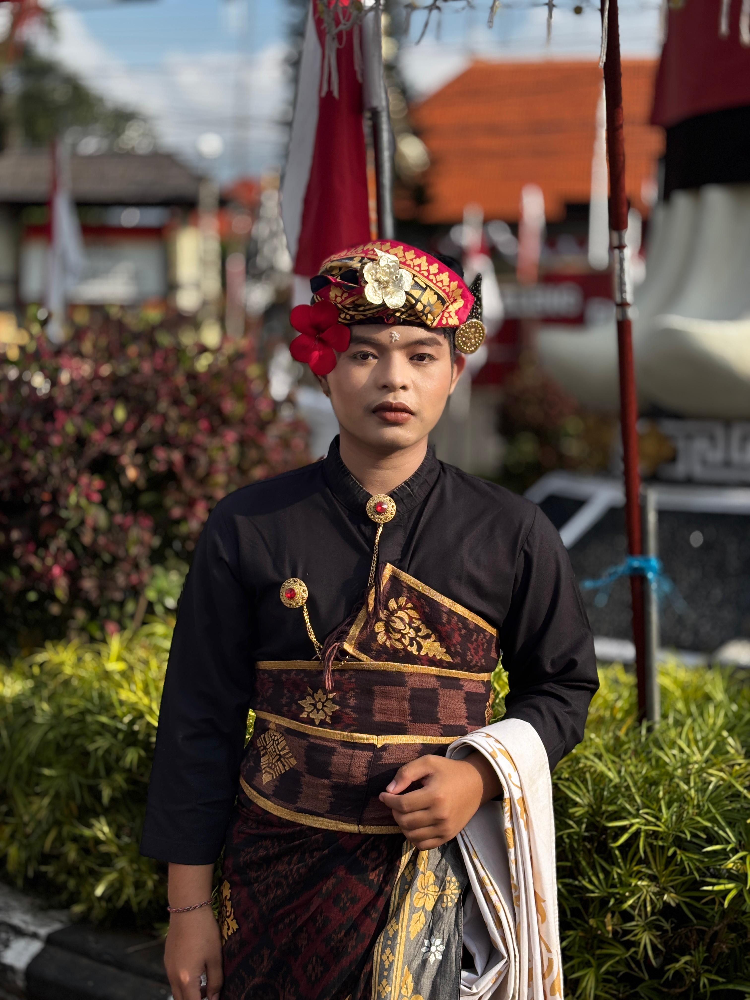
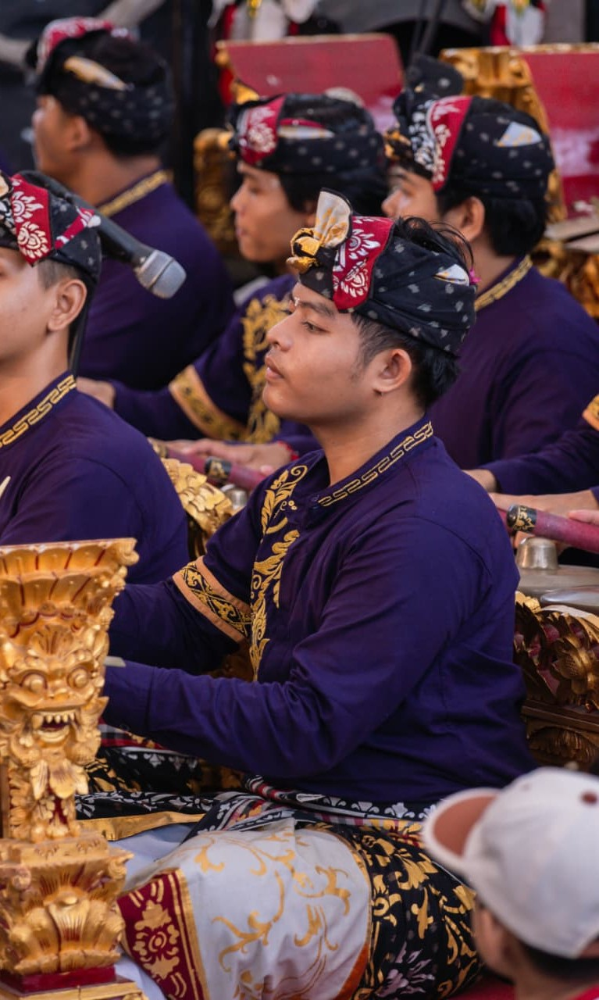
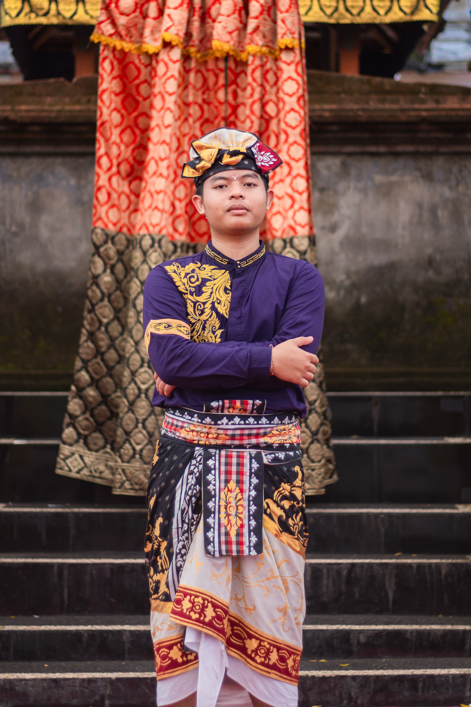
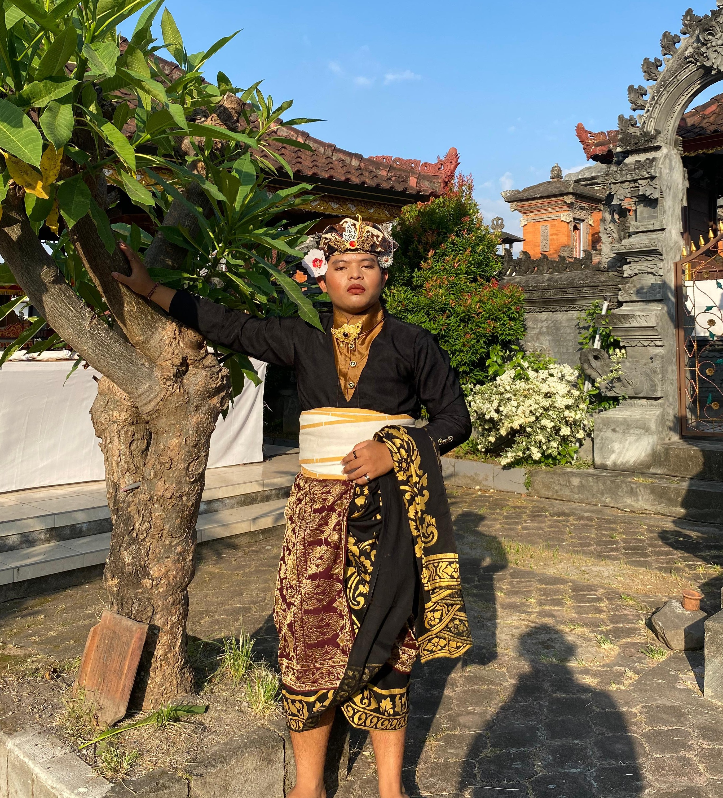
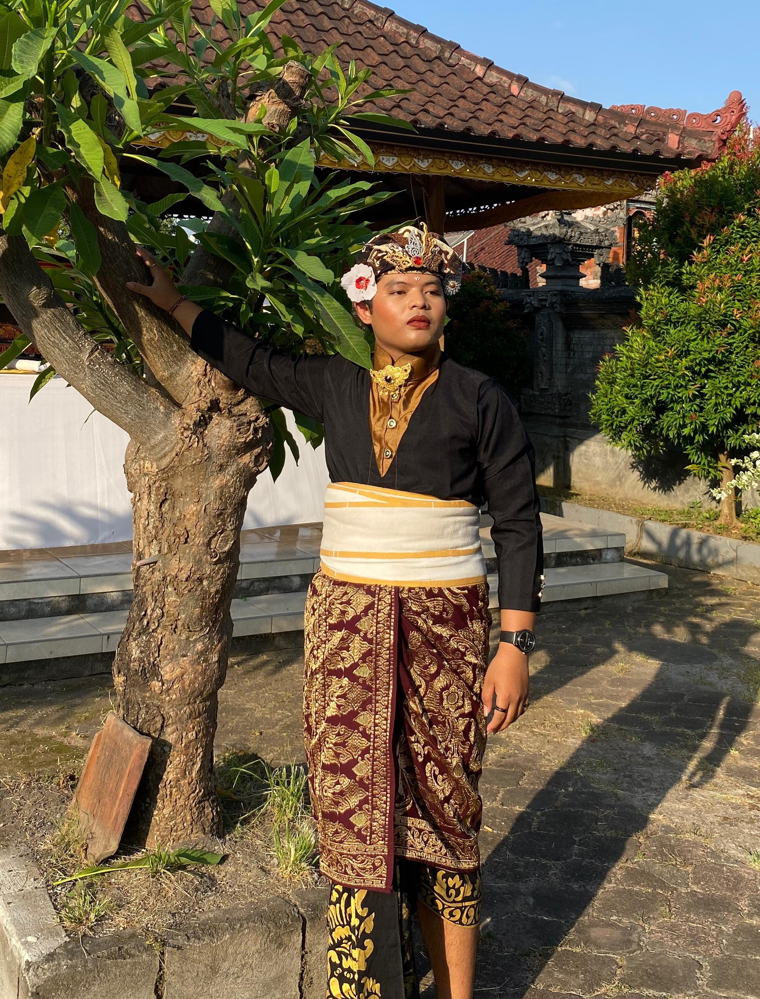
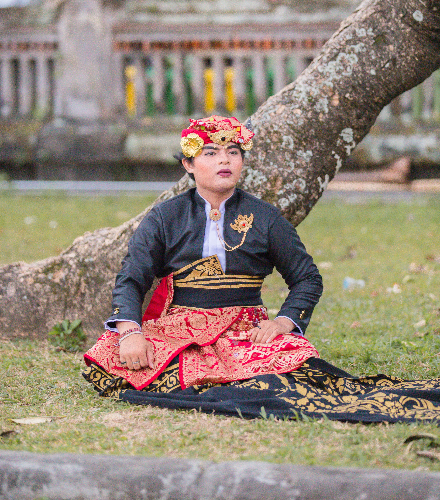
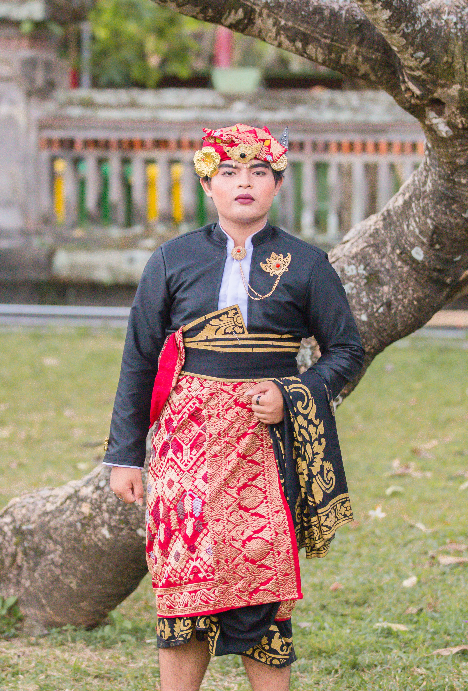

Om Swastyastu
Atas Asung Kertha Wara Nugraha Ida Sang Hyang Widhi Wasa/Tuhan Yang Maha Esa, kami bermaksud menyelenggarakan Upacara Manusa Yadnya (Metatah/Mepandes) putra kami:
Gusti Ketut Jyesta Indrawan
Putra ke-3 dari Pasangan:
I Gusti Putu Ariawan
&
Gusti Ayu Sri Manik
"Jadilah engkau orang yang teguh dalam kebajikan, buanglah segala rasa benci dan sifat buruk dari dalam dirimu. Hendaklah engkau saling mengasihi, berbicara dengan kelembutan, dan selalu bersatu dalam pikiran yang mulia."
Atharvaveda III.30.3
Galeri Foto







Waktu & Tempat Pelaksanaan
Hari & Tanggal
Kamis, 15 Oktober 2026
Pukul: 14:00 WITA - Selesai
Lokasi Acara
Br. Dinas Yadnya Kerthi
Desa Ularan, Kecamatan Seririt, Kabupaten Buleleng
Buka Google Maps
00
days
00
hours
00
minutes
00
seconds